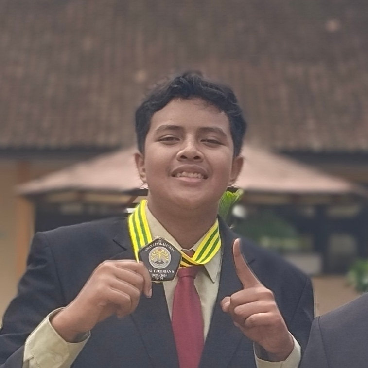

Adaptable Professional | Tech & General Operations
Digital & IT
Field & Physical
Telkom University
S1 Teknik Komputer
2024 - Sekarang
SMAN 1 Pangalengan
Lulus Tahun 2024
Lisensi Mengemudi:
Belum memiliki SIM (Dalam proses pengurusan)
Mahasiswa Teknik Komputer dengan disiplin tinggi sebagai Atlet Renang. Saya memiliki kombinasi unik antara kemampuan teknis IT (Web Dev & IoT) dan kesiapan kerja fisik yang tangguh. Saya sangat terbuka untuk bekerja di berbagai bidang: mulai dari pengembangan web, staf operasional (Kasir/Waiter), hingga pekerjaan lapangan seperti pengangkutan suplai makanan/logistik. Saya adalah individu yang cepat belajar, jujur, dan memiliki jiwa kepemimpinan tim.
Memimpin tim merancang hardware otomatis. Pengalaman ini melatih kemampuan Team Leadership dan ketelitian kerja.
Juara 1 Lomba Renang - Kabupaten Bandung
Membuktikan kedisiplinan, ketangguhan fisik, dan kesiapan bekerja keras di bawah tekanan untuk mencapai hasil terbaik.